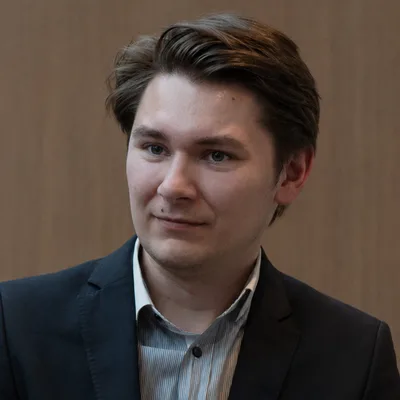

Systematic Bible Study
Contacts
This site is run by the Protestant Reformed church "Covenant of Christ", St Petersburg, together with ministers of other congregations who teach by this method themselves. Write to us — the training is free.
Write to us
Questions about training and a trial lesson.
YouTube: "Covenant of Christ"
Lesson recordings; the English ones are marked with the 🇬🇧 flag.
Who we are
Ivan Gursky
Pastor of the "Covenant of Christ" church, St Petersburg
Born into a family of Protestant ministers and grew up in the church.
Led the leaders of home groups and served in rehabilitation centres. Has mentored home-group leaders for more than 15 years.
Stanislav Rybko
Pastor of a "Covenant of Christ" church
Since 2007 he has trained more than 30 pastors in this method.

Yurii Kostyukov
Preaching deacon of the "Covenant of Christ" church, St Petersburg
M.Div. student at St Petersburg Biblical Theological Seminary.
PhD in physics and mathematics; speaks English and biblical Hebrew.